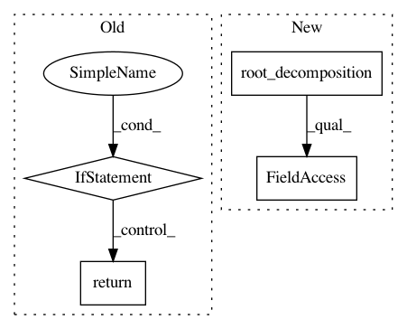

c62f2fbaffffd849d4ea837574e71c26077df29a,gpytorch/lazy/block_diag_lazy_tensor.py,BlockDiagLazyTensor,root_decomposition,#BlockDiagLazyTensor#,126
Before Change
@cached(name="root_decomposition")
def root_decomposition(self):
if settings.fast_computations.covar_root_decomposition.on():
return super().root_decomposition()
chol = torch.cholesky(self.base_lazy_tensor.evaluate())
res = self.__class__(NonLazyTensor(chol), num_blocks=self.num_blocks)
return RootLazyTensor(res)
After Change
@cached(name="root_decomposition")
def root_decomposition(self):
if settings.fast_computations.covar_root_decomposition.on():
res = self.__class__(self.base_lazy_tensor.root_decomposition().root, num_blocks=self.num_blocks)
else:
chol = torch.cholesky(self.base_lazy_tensor.evaluate())
res = self.__class__(NonLazyTensor(chol), num_blocks=self.num_blocks)
In pattern: SUPERPATTERN
Frequency: 3
Non-data size: 4
Instances
Project Name: cornellius-gp/gpytorch
Commit Name: c62f2fbaffffd849d4ea837574e71c26077df29a
Time: 2019-01-23
Author: balandat@fb.com
File Name: gpytorch/lazy/block_diag_lazy_tensor.py
Class Name: BlockDiagLazyTensor
Method Name: root_decomposition
Project Name: cornellius-gp/gpytorch
Commit Name: 8c40ed8fb56baef7ab5ce8d5ed85bb10e4f09174
Time: 2020-12-16
Author: wjm363@nyu.edu
File Name: gpytorch/lazy/kronecker_product_lazy_tensor.py
Class Name: KroneckerProductLazyTensor
Method Name: root_decomposition
Project Name: cornellius-gp/gpytorch
Commit Name: db830daee51fa17726524533da469fb91804b2a0
Time: 2018-01-30
Author: gpleiss@gmail.com
File Name: gpytorch/lazy/interpolated_lazy_variable.py
Class Name: InterpolatedLazyVariable
Method Name: root_decomposition